Citing and logo #
Citing pandas #
If you use pandas for a scientific publication, we would appreciate citations to the published software and the following paper:
-
pandas on Zenodo, Please find us on Zenodo and replace with the citation for the version you are using. You can replace the full author list from there with "The pandas development team" like in the example below.
@software{reback2020pandas, author = {The pandas development team}, title = {pandas-dev/pandas: Pandas}, month = feb, year = 2020, publisher = {Zenodo}, version = {latest}, doi = {10.5281/zenodo.3509134}, url = {https://doi.org/10.5281/zenodo.3509134} } -
Data structures for statistical computing in python, McKinney, Proceedings of the 9th Python in Science Conference, Volume 445, 2010.
@InProceedings{ mckinney-proc-scipy-2010, author = { {W}es {M}c{K}inney }, title = { {D}ata {S}tructures for {S}tatistical {C}omputing in {P}ython }, booktitle = { {P}roceedings of the 9th {P}ython in {S}cience {C}onference }, pages = { 56 - 61 }, year = { 2010 }, editor = { {S}t\'efan van der {W}alt and {J}arrod {M}illman }, doi = { 10.25080/Majora-92bf1922-00a } }
Brand and logo #
When using the project name pandas, please use it in lower case, even at the beginning of a sentence.
The official logos of pandas are:
Primary logo #

|
Secondary logo #

|
Logo mark #

|
 |
Logo usage #
The pandas logo is available in full color and white accent. The full color logo should only appear against white backgrounds. The white accent logo should go against contrasting color background.
When using the logo, please follow the next directives:
- Primary logo should never be seen under 1 inch in size for printing and 72px for web
- The secondary logo should never be seen under 0.75 inch in size for printing and 55px for web
- Leave enough margin around the logo (leave the height of the logo in the top, bottom and both sides)
- Do not distort the logo by changing its proportions
- Do not place text or other elements on top of the logo
Colors #
|
Blue RGB: R21 G4 B88 HEX: #150458 |
Yellow RGB: R255 G202 B0 HEX: #FFCA00 |
Pink RGB: R231 G4 B136 HEX: #E70488 |